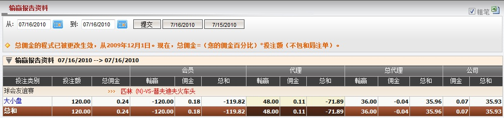
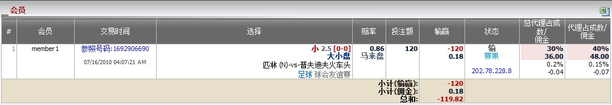

输赢报告资料
定义:
这份报告显示会员, 代理, 总代理对于每场赛事的输赢总计。您可选择所需的日期, 然后点击提交键。

图 1.1
用词注解:
- 投注类别: 被选择投注的投注类别。
- 投注额: 投注额
- 总佣金: 总代理从上线处可能得到的最高佣金数额。
- 会员输赢: 会员输赢的数额。
- 会员佣金: 会员从代理处得到的佣金数额。
- 会员总和: 会员包括佣金的总输赢数额。
- 代理输赢: 代理基于占成数的输赢数额。
- 代理佣金: 扣除会员佣金后, 总代理支付予代理的佣金数额。
- 代理总和: 总代理收到或支付予代理的数额。
- 总代理输赢: 总代理基于占成数的输赢数额。
- 总代理佣金: 扣除代理佣金后, 总代理从上线处收到的佣金数额。
- 总代理总和: 总代理包括佣金的总输赢数额。
- 公司佣金: 总代理从上线出收到的佣金。
- 公司总和: 总代理需支付予或从上线处接收到的总数额。
如何理解报告:
在这份报告, 会员投注 120, 赔率 = 0.86, 会员佣金 = 0.15%, 代理佣金 = 0.15%, 代理占成数 40%, 总代理佣金 = 0.2%, 总代理占成 = 30%。 让我们以赛事 "匹林 (中) -vs- 普夫迪夫火车头"作为例子, 以了解如何计算此报告。在这张注单, 会员输:

图 1.2
注:
- 若 赔率 < 0
- 如果会员赢那么赔率 = 1.
- 如果会员输那么赔率 = |当前赔率|。
- 若 赔率 > 0
- 如果会员赢那么赔率 = 当前赔率。
- 如果会员输那么赔率 = 1。
- 如果投注类别为波胆, 1x2, 总进球, 半场/全场, 优胜冠军, 混合过关, 最先得分/最后得分那么赔率 = 当前赔率 - 1。
- 这只是一个简单的例子告诉您如何计算一个投注的输赢输额。在现实中, 一场赛事可能包含很多投注所以我们必须计算个别投注的输赢及佣金, 总结后才能得到全部输赢的总额。
- 投注额 = 投注额 = 120.
- 总佣金 = 投注额 * 总代理佣金 = 120 * 0.2% = 0.24.
- 会员输赢 = -投注额 * 赔率 = -120 * 1 = -120.
- 会员佣金 = 投注额 * 会员佣金 = 120 * 0.15% = 0.18.
- 会员总和 = 会员输赢 + 会员佣金 = -120 + 0.18 = -119.82.
- 代理输赢 = 投注额 * 代理占成 = 120 * 40% = 48.
- 代理佣金 = 投注额 * 代理佣金 * (1 - 代理占成) = 120 * 0.15% * (1 - 40%) = 0.11.
- 代理总和 = 会员输赢 + 代理输赢 + 代理佣金 = -120 + 48 + 0.11 = -71.89.
- 总代理输赢 = 投注额 * 总代理占成 = 120 * 30% = 36.
- 总代理佣金 = 投注额 * 总代理佣金 * [1 - (总代理占成 + 代理占成)] - 代理佣金 = 120 * 0.2% * [1 - (30% + 40%)] - 0.11 = -0.04.
- 总代理总和 = 总代理输赢 + 总代理佣金 = 36 - 0.04 = 35.96.
- 公司佣金 = 投注额 * 总代理佣金 * [1 - (总代理占成 + 代理占成)] = 120 * 0.2% * [1 - (30% + 40%)] = 0.07.
- 公司总和 = -(会员输赢 + 代理输赢 + 总代理输赢 + 公司用金) = -(-120 + 48 + 36 + 0.07) = 35.93.